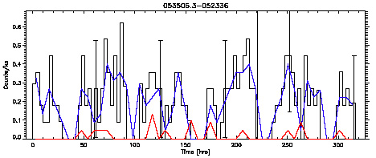
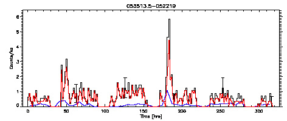
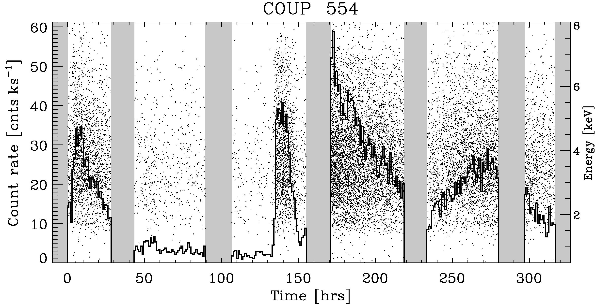
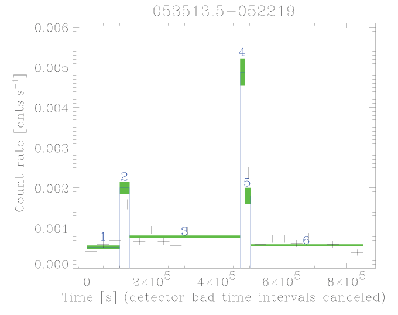

Home
| People | Partners
| VOStat | StatCodes | Data & Tutorials | Events | Bibliographies

Chandra Orion star flaresThe CASt datasetsFaint_constant.datFaint_flaring.dat Bright_fiaring.dat Astronomical background Our Sun and ordinary stars we see at nighttime appear constant in brightness to our naked eyes. But at other wavelengths of light where the stars are much fainter (such as radio, X-ray and gamma-rays), the stars are violently variable on rapid timescales. These emission arises from explosive releases of energy at the stellar surface associated with magnetic fields. These solar or stellar flares occur when magnetic fields generated in the stellar interior erupt on the surface and, due to convective motions, are twisted until a sudden reconfiguation occurs. The process resembles the spark appearing when two wires are crossed in an electric circuit. The result is a sudden acceleration of particles to extremely high energies, and the heating of gas trapped in magnetic loops to X-ray emitting temperatures (106-108 degrees Kelvin). Ordinary stars exhibit their highest levels of magnetic activity, and their strongest flares, during the youngest pre-main sequence phases (Feigelson & Montmerle 1999). X-ray telescopes such as the Chandra X-ray Observatory provide an excellent view of these flares. The most extensive dataset obtained in this field was the Chandra Orion Ultradeep Project (COUP), where Chandra observed the Orion Nebula region of young stars for nearly two weeks continuously. The X-ray sources are sometimes very faint with only a handful of photons arriving over the observation, and sometimes orders of magnitude brighter. The arrival times of these photons can be viewed as a Poisson process. These are stationary time series if the source does not flare and non-stationary time series if flares are present. Dataset We have extracted time series from three of the 1616 COUP
sources: 
COUP #263: Binned
lightcurve (histogram) of the photon arrival times. An apparently
constant X-ray source with 209 photons. We believe this is an
extragalactic quasar which cannot exhibit rapid flares (Getman et al.
2005b). Here the blue and red curves give the hard and soft
energy lightcurves.

COUP # 551: A faint flaring newly discovered Orion star with 678
photons (Getman et al.
2005b). 
COUP #554: A bright extremely variable protostar deeply embedded in the
OMC-1 South molecular cloud (Grosso et al. 2005).
Here,
14,258 individual photons are shown as dots with their energies
indicated by
the right-hand ordinate. Our datasets are obtained from the extracted Chandra event files (source.evt.fits) with two simplifications. First, only two columns are provided: photon arrival time in seconds (from 0 to 850,000 seconds); and photon energy in keV (from 0.5 to 8.0 keV). Second, 5 gaps associated with the Chandra orbit (readily seen in the lightcurves above) are removed. Thus, the arrival times do not exactly correspond to clock time, but the de-gapped time series is simpler to analyze and scientific information is not seriously compromised. Statistical exercises

|